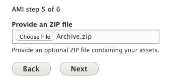

Using the Islandora 7 Solr Importer
From either the main Content page or the AMI Sets List page, select the 'Start an AMI set' button to begin.
Step 1: Plugin Selection
Select the Islandora 7 Solr Importer from the dropdown menu.

Step 2, section 1: Solr Server Configuration
You will only have the option to select 'Create New ADOs' as the Operation you would like to perform.
For the Solr Server Configuration section, you will need to provide all of the following information:
- PID of the Islandora Collection Members you want to fetch (example: islandora:root)
- Host of your Solr Server (example: repositorydomain.org)
- Port (example: 8080)
- Path (example: /)
- Type of Solr Deployment
- Either Single Solr Server (most common) or Solr Cloud Ensemble
- Core (example: islandora)
You will also need to select Starting Row you would like to begin fetching results from, and the Number of Rows to fetch.
The Starting Row is an offset and defaults to 0, which is the most common (and recommended) approach. For the Total Number of Rows to Fetch, setting this to empty or null will automatically (refresh when selecting 'Next' button at bottom of page) prefill with the real Number Rows found by the Solr Query invoked. If you set this number higher than the actual results we will only fetch what can be fetched.
For larger collections, you may wish to create multiple/split AMI ingest sets by selecting a specified number of rows.
-
As an example, for a collection of 1500 objects that you wanted to split into three AMI ingests of 500 objects, you would specify the Starting Row as 0 for the first set and Number of Rows as 500. For the second set, your Starting Row would be Row 501; for the third set, 1001). In this example, the Number of Rows would always be 500.

Step 2, section 2: Islandora Mappings
In this step you will need to make determinations on how you would like to map your Islandora 7 digital objects to your Archipelago repository.
-
Selecting "Collapse Multi Children Objects" will collapse Children Datastreams into a single ADO with many attached files (single row in the generated AMI set .csv file). Book Pages will be fetched but also the Top Level PDF (if one exists in your Islandora instance).

-
In the Required ADO mappings, you will need to specify which Archipelago type you want to map each Islandora Content Model found in your source collection.
- For example, for info:fedora/islandora:sp_large_image_cmodel you may want to use Photograph.
-
If you had left "Collapse Multi Children Objects" unselected, you will also need to specify the Islandora Content Model to ADO types mapping for possible Children.
-
You can also specify an ADO (Object or Collection) to be used the Parent of Imported Objects. By selecting an existing ADO (Object or Collection) here using the autocomplete/search, the generated AMI set .csv file will contain an 'ismemberof' column containing the UUID of the selected ADO for every row.
Step 3: Data Transformation Selections
Select the data transformation approach--how your source data will be transformed into ADO (Archipelago Digital Object) Metadata. As noted in the list below, 'Custom (Expert Mode)' is the recommended choice for AMI sets generated using the Islandora 7 Solr Importer plugin.
-
You will have 3 options for your data transformation approach:
- Direct
- Columns from your spreadsheet source will be cast directly to ADO metadata (JSON), without transformation/further processing (only intended for use with simple data strings).
- Custom (Expert Mode) Recommended choice for AMI sets generated using the Islandora 7 Solr Importer plugin
- Provides very granular custom data transformation and mapping options
- Needs to be used if importing Digital Objects and Digital Object Collections at the same time/from same spreadsheet source (see separate instructions below).
- Template
- Columns from your spreadsheet source will be cast to ADO metadata (JSON) using a Twig template setup for JSON output.
- Direct
-
You will also need to Select which columns contain filenames, entities or URLS where files can be fetched from. Select what columns correspond to the Digital Object types found in your spreadsheet source.
-
Lastly, for this step, you will need to select the destination Fields and Bundles for your New ADOs. If your spreadsheet source only contains Digital Objects, select
Strawberry (Descriptive Metadata source) for Digital Object- If using Sheet 1 of the Demo AMI Ingest set (found above):
- Select
Templateand use the AMI Ingest JSON template that corresponds with your metadata elements. -
Select
images,documents, andaudiosfor the file source/fetching.
- Select
- If using Sheet 1 of the Demo AMI Ingest set (found above):
Step 4: Global ADO Mappings
Select your global ADO mappings.
- Even if empty (no values), select
node_uuidand any relationship predicate columns (such asismemberof). - By default, the option to automatically assigns UUIDs is selected. If you have existing UUIds, unselect this option.
- Select the corresponding Columns for the Required ADO mappings.
-
If using Sheet 1 of the Demo AMI Ingest set (found above):
- Select both
ismemberofandnode_uuidfor ADO Parent columns - Keep 'Automatically assign UUID' checked
- Do not select any column for 'Sequence'
- Select the
labelcolumn for ADO Label

- Select both
Step 5: ZIP upload
For standard Spreadsheet or Google Sheets AMI ingests, you would use this step to provide an optional ZIP file containing your assets.
For your Islandora 7 Solr Importer process, the generated AMI set .csv file will contain the necessary URLs to the corresponding Islandora 7 file datastreams for each object as needed. Select next to skip this ZIP upload step and proceed.

Step 6: Batch fetching from Solr
During this step, AMI will fetch the specified digital objects from the remote Solr source. This is generally a quick process, but be aware that settings in the remote Solr source can impact the response time.
Step 7: AMI Set Confirmation
You will now see a message letting your know your "New AMI Set was created". You will be able to review the generated .csv file directly from this page under Source Data File.

While you may immediately select "Process" from this AMI Set Confirmation page to use the Islandora 7 Importer generated .csv file as-is to ingest the ADOs in your AMI set, it is strongly recommended that you review the .csv file first. AMI is configured to trim unecessary (for Archipelago) and de-duplicate redundant Solr source data, but you may wish to pare down the sourced data even further and/or conduct general metadata review and cleanup before migrating your content. You will also likely want to make adjustments to your AMI Ingest JSON Template based on your review, depending on the variation of metadata columns/keys found in your source repostiory.
Step 8: AMI Set Processing
Whether you have chosen to review your .csv file or not, your newly created AMI Set will now need to be Processed.
On the main AMI set page, you can review the configurations and Source Data File for your set (determined by your selections in the preceding steps).

To Process this set, navigate to the Process tab. You will have two options related to the Processing outcome for your AMI Set.
- Option 1: Select the "Desired ADOS Statuses After Process" for both Digital Objects (and Digital Object Collections, if also part of your ingest).
- The Statuses you have available will reflect the publication workflow/moderation states (such as Draft, Published, Archived/Unpublished) setup in your Archipelago instance, and the permissions associated your user account.
- Option 2: You may choose to check the option to 'Enqueue but do not process Batch' to place the AMI set in the Queue to Process. For the AMI version shipped with Archipelago 1.0.0-RC2, the option to 'Enqueue' for scheduled/future Processing should only be used if the Queue operations for your Archipelago instance are configured. Please return to this page for updated Enqueueing instructions that will accompany future releases.
-
Select
Confirmto continue.
You may also select Process from the Operations menu for the AMI set from the main AMI sets page.

If you chose to 'Confirm" and Process your AMI Set immediately, proceed to Step 9: Processing and ADO Creation.
Step 9: Queue Manager (if not Processing immediately)
If you chose to place your AMI set in the Queue to Process in step 7, you may need to navigate to the Queue Manager found at /admin/config/system/queue-ui. (Be sure to select the Queue Manager under the System section, not the Queue Manager for Hydroponic Service under the Archipelago section). If the Queue operations for your Archipelago instance have been configured, you can simply leave your AMI Set in the Queue for Processing on the preconfigured schedule.

To Process your AMI Set immediately from the Queue Manager page, select the checkbox next to the 'AMI Digital Object Ingester Queue Worker'. Keep the Action menu set to Batch Process and click the Apply to selected items button.

Step 10: Processing and ADO Creation
Your AMI set will now be Processed. You can follow the set's progress through the Processing queues loading screen.

After your AMI set is Processed, you will receive confirmation messages letting you know your Digital Objects were successfully created.

From this message, you can click on each ADO title to review the new created Digital Object (or Collection) if you wish. Or, you may proceed to step 10.
Step 11: Review your newly created Digital Objects
Return to the main Content page found at /admin/content and review your newly created Digital Objects. After ensuring that files and metadata elements were mapped correctly, you may choose to change the Status for your Digital Objects to 'Published'. Celebrate your AMI success with a fresh coffee, tea, or cookie!
Thank you for reading! Please contact us on our Archipelago Commons Google Group with any questions or feedback.
Return to the Archipelago Documentation main page.